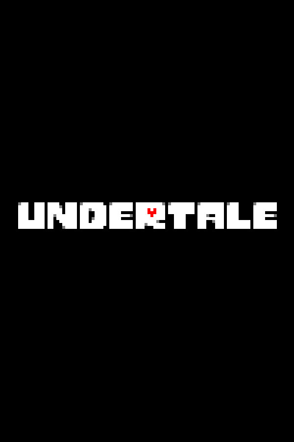
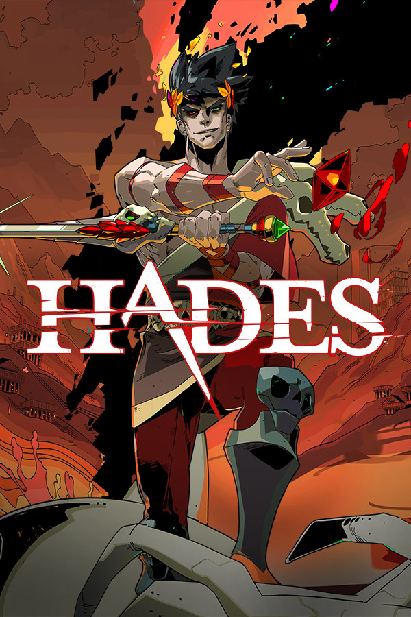

Cada indie que você joga vira uma jornada. Guarde aqui suas horas, os bosses que você venceu e quantas tentativas cada um custou, e acompanhe tudo no seu perfil e na sua dashboard.
Dois jogos de 2017 feitos por equipes pequenas que viraram referência no mundo inteiro.

Um cavaleiro pequeno explora Hallownest, um reino de insetos em ruínas. Feito por três pessoas, ficou famoso pelo mapa enorme, pela arte desenhada à mão e pelos bosses difíceis.
Conhecer o jogo
Cuphead e Mugman perdem uma aposta para o Diabo e precisam enfrentar uma luta de chefe atrás da outra. Cada quadro foi desenhado à mão, no estilo dos desenhos animados dos anos 1930.
Conhecer o jogo
Total de horas, horas de cada jogo, bosses derrotados, tentativas e a dificuldade que você sentiu em cada luta.

Gráficos mostram onde você passou mais tempo, quanto falta para fechar cada jogo e quais bosses deram mais trabalho.

Cada jogo com os seus bosses e a média de tentativas dos jogadores, para você saber o que te espera.
Um jogo indie é feito por uma pessoa ou por uma equipe pequena, sem uma grande editora decidindo o que pode ou não pode. Por isso esses jogos arriscam mais: histórias estranhas, visuais diferentes e ideias que um estúdio grande talvez nunca aprovasse.
Por muito tempo eles ficaram escondidos. Foi a internet, com as lojas digitais e o financiamento coletivo, que abriu caminho até os jogadores. Depois vieram os prêmios, muitas vezes na frente de produções gigantes.
Sem editora mandando, quem cria decide a história, o visual e até o quanto o jogo vai ser difícil.
Muitos clássicos foram feitos por duas ou três pessoas, às vezes por uma só, ao longo de anos.
São os jogadores que ajudam a pagar, espalham a notícia e mantêm esses jogos vivos por muito tempo.
Daisuke Amaya passou cerca de cinco anos fazendo sozinho, no tempo livre, a arte, a música e a programação. O jogo saiu de graça e inspirou uma geração inteira a criar jogos sozinha.
Jonathan Blow lança Braid no Xbox Live Arcade, um jogo de plataforma em que voltar no tempo faz parte dos quebra-cabeças. O sucesso mostrou que as lojas digitais dos consoles tinham espaço para jogos pequenos.

Toby Fox pediu 5 mil dólares e arrecadou mais de 51 mil, mais de dez vezes a meta. O jogo saiu em 2015 e provou que a própria comunidade pode bancar uma ideia em que acredita.

A Team Cherry, da Austrália, e o Studio MDHR, do Canadá, lançam dois dos jogos mais marcantes da década, famosos pelos chefes difíceis e pela arte feita à mão.

Celeste ganha o prêmio de Melhor Jogo Independente no The Game Awards. Um jogo de plataforma difícil que fala abertamente de ansiedade mostrou que jogo pequeno também pode tratar de assunto sério.

Lançado em 2020, o Hades da Supergiant Games ganha o prêmio de Melhor Jogo no BAFTA Games Awards, disputando com produções de orçamento muito maior.

Anunciado em 2019, Hollow Knight: Silksong é lançado depois de mais de seis anos de espera. Uma prova de como uma equipe pequena consegue segurar a atenção de milhões de fãs.
pessoa fez Stardew Valley inteiro: Eric Barone criou a arte, a música e a programação.
irmãos, Chad e Jared Moldenhauer, criaram o Studio MDHR para fazer Cuphead.
pessoas formavam a Team Cherry durante a criação de Hollow Knight.
foi o tempo para fazer a primeira versão de Celeste, criada numa game jam.
Nunca jogou um indie ou está procurando o próximo? Veja qual combina mais com você.
Criar conta é rápido. Depois é só registrar os jogos que você joga.